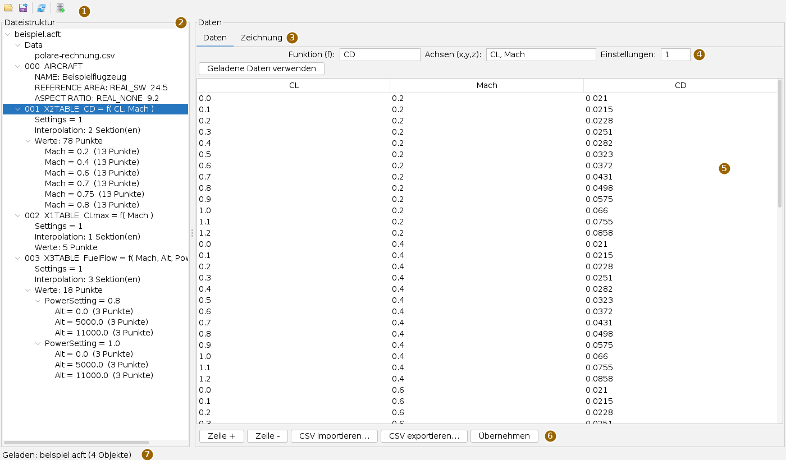
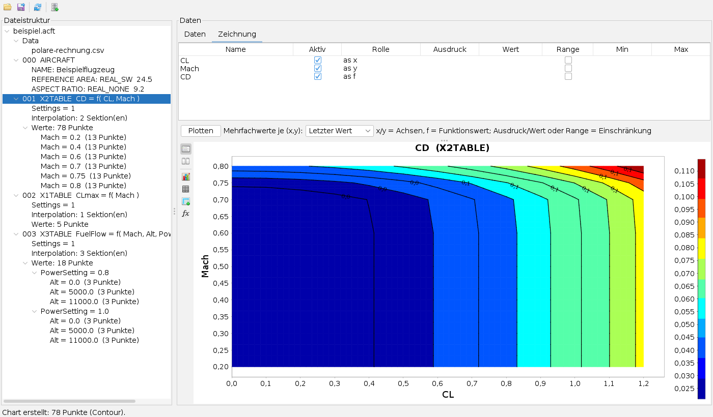
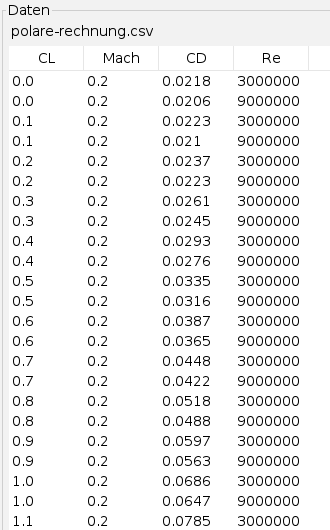
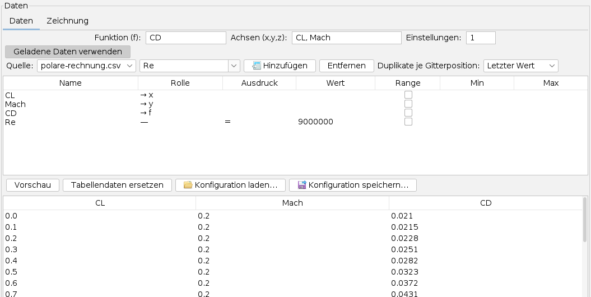
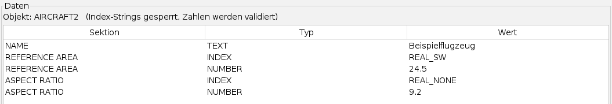

Den ACFT-Editor bedienen
Bedienseite, Stand 04.10.2026. Wie man eine Flugzeugdatei öffnet, eine Funktionstabelle ändert, zeichnet und aus einer Rechnung neu befüllt und die Datei sicher zurückschreibt. Die Bilder sind Bildschirmfotos der App; das Beispielflugzeug und seine Zahlen sind erfunden.
Das Fenster
Die App öffnet man im Menü Anwendungen mit ACFT-Datei öffnen… oder mit Alt+F. Sie fragt zuerst nach der Datei; ohne Datei gibt es nichts zu bearbeiten, denn die App erzeugt keine neuen Dateien.

Der Baum zeigt die Datei als Folge nummerierter Objekte. Bei Funktionstabellen stehen darunter die Einstellungen, die Interpolation und die Werte, gegliedert nach den Blöcken der äußeren Achsen mit ihrer Punktzahl. Was man im Baum wählt, erscheint rechts: eine Funktionstabelle in der Tabellenkarte, jedes andere Objekt in der Objektkarte, eine Datenquelle als blätterbare Tabelle. Geänderte Objekte tragen im Baum ein Sternchen.
Was in den Funktionstabellen steht
Eine Funktionstabelle ordnet einer oder mehreren Eingangsgrößen einen Ausgangswert zu. Der Typ sagt, wie viele Eingangsgrößen es sind:
| Typ | Eingangsgrößen | Beispiel |
|---|---|---|
X1TABLE | eine | höchster Auftriebsbeiwert über der Machzahl |
X2TABLE | zwei | Widerstandsbeiwert über Auftriebsbeiwert und Machzahl |
X3TABLE | drei | Kraftstofffluss über Machzahl, Höhe und Leistungsstufe |
Die Punkte stehen in Blöcken: Die innerste Achse läuft innerhalb eines Blocks, die äußeren Achsen zählen die Blöcke ab. Im Bild hat die Widerstandstabelle sechs Blöcke, einen je Machzahl, mit je 13 Werten des Auftriebsbeiwerts.
Die Werkzeugleiste
Die Knöpfe tragen nur Symbole; was sie tun, steht im Tooltip.
| Symbol | Tooltip | Was geschieht |
|---|---|---|
 | ACFT-Datei öffnen… | Eine andere Datei laden. Große Dateien werden im Hintergrund gelesen. |
| Speichern unter… | Die Datei unter neuem Namen schreiben; vorgeschlagen wird neu_<name>, damit das Original nicht überschrieben wird. | |
| Roundtrip prüfen (Dokument = geladene Datei?) | Das Dokument im Speicher wird geschrieben und mit der geladenen Datei verglichen; das Ergebnis steht in der Meldungsleiste. | |
 | Datenquellen laden (CSV/H2) | CSV-Dateien oder H2-Datenbanken als Quellen anmelden; sie erscheinen im Baum unter Data. |
Sicher öffnen und speichern
Das Dateiformat ist nicht offen beschrieben. Was die App darüber weiß, stammt aus der Beobachtung echter Dateien. Das reicht, um Funktionstabellen zu finden und zu ändern, aber nicht, um eine gültige Datei von Grund auf zu erzeugen. Deshalb arbeitet die App nach dem Vorlagenprinzip: Sie lädt eine vom Flugleistungsprogramm erzeugte Datei vollständig, ändert nur, was man bearbeitet, und reicht alles Übrige unverändert durch.
- Sicherungskopie anlegen. Trotz Vorlagenprinzip bleibt ein Restrisiko. Bei einer Datei, an der lange gearbeitet wurde, ist eine Kopie die billigste Versicherung.
- Datei öffnen und gleich nach dem Laden Roundtrip prüfen. Meldet die Prüfung Gleichheit, liest die App diese Datei verlustfrei. Meldet sie einen Unterschied, enthält die Datei etwas, das der Leser noch nicht kennt; dann besser nicht speichern.
- Ändern, dann mit Speichern unter… unter neuem Namen schreiben und die neue Datei im Flugleistungsprogramm prüfen.
Zahlen werden in der Schreibweise des Originals geschrieben: gleiche Stellenzahl, Ausrichtung und Trennzeichen. Eine mathematisch gleiche Zahl in anderer Schreibweise kann vom lesenden Programm anders behandelt werden, ohne dass ein Fehler auffällt.
Wer die App mit ungespeicherten Änderungen schließt, wird gefragt, ob er sie verwerfen will.
Eine Tabelle bearbeiten
Im Reiter Daten stehen oben die Metafelder: Funktion (f) ist der Name des Ausgangswerts, Achsen (x,y,z) die Eingangsgrößen, Einstellungen der Einstellungswert der Tabelle. Darunter die Punkte, eine Zeile je Punkt, die Eingangsgrößen links, der Funktionswert rechts.
- Werte ändert man direkt in der Tabelle; Zeile + und Zeile - fügen eine Zeile an oder entfernen die gewählte.
- CSV exportieren… schreibt die Punkte als CSV, etwa zum Bearbeiten in einer Tabellenkalkulation. Bei größeren Tabellen ist dieser Umweg bequemer als die Maske.
- CSV importieren… liest sie wieder ein und prüft dabei, ob die Zahl der Achsen zur Tabelle passt. Passt sie, stehen die Punkte in der Maske.
- Erst Übernehmen schreibt die Punkte in das Dokument. Dabei prüft die App, ob jede Zelle eine Zahl ist und ob so viele Achsennamen eingetragen sind, wie die Tabelle Achsen hat. Auch der CSV-Weg ersetzt nur diese eine Tabelle; auf der Platte ändert sich erst beim Speichern etwas.
Eine Tabelle zeichnen

- Reiter Zeichnung öffnen. Die Konfiguration oben ist schon vorbelegt: die Achsen als x und y, der Funktionswert als f.
- Je Spalte lässt sich mit Aktiv abschalten, die Rolle ändern oder die Spalte einschränken: Ausdruck und Wert (etwa
=und0,8) oder Range mit Min und Max. So schneidet man bei einer Tabelle mit drei Achsen eine Ebene heraus. - Plotten drücken. Tabellen mit einer Achse werden als Linie gezeichnet, mit zwei Achsen als Kontur. Liegen an einer Stelle (x, y) mehrere Werte, entscheidet Mehrfachwerte je (x,y), welcher gilt.
Die senkrechte Leiste links neben dem Diagramm öffnet die Einstellungen:
| Symbol | Tooltip | Was geschieht |
|---|---|---|
 | Plot-Konfiguration ein-/ausblenden | Die Konfigurationstabelle über dem Diagramm verschwindet; das Diagramm wird größer. |
 | Options-Bereich | Die Diagrammoptionen links neben dem Diagramm ein- und ausblenden; Änderungen wirken sofort. |
 | Diagramm-Optionen | Titel, Achsen, Legende und Farbskala. |
 | Plot-Optionen | Hintergrund, Gitterlinien und das Netz der Daten. |
 | Datenpunkte | Die Stützstellen über das Diagramm legen, auf Wunsch mit Werten; ein Klick auf einen Punkt zeigt seine Einzelheiten. |
 | Zusätzliche Iso-Linien (nur Contourplot) | Eine weitere Größe als Isolinien über die Kontur legen, etwa die dritte Achse. |
Vollständige Gitter werden als Gitterkontur gezeichnet, unregelmäßige Punktwolken über eine Dreiecksvermaschung. Die Zoom-Rücknahme kehrt zu den Grenzen zurück, die man in den Achsenoptionen eingegeben hat.
Daten aus einer Rechnung einspielen

Oft liegen neue Werte als Ergebnis einer Rechnung vor, als CSV-Datei mit einer Spalte je Größe und mehr Spalten, als die Tabelle braucht. Im Beispiel hat die Rechnung den Widerstand für zwei Reynoldszahlen geliefert; in die Tabelle soll nur eine davon.

- Mit Datenquellen laden eine CSV-Datei oder H2-Datenbank anmelden. Eine CSV-Datei wird beim ersten Mal in eine H2-Datenbank neben der Datei umgesetzt; ist diese aktuell, wird sie wiederverwendet. Die Quelle steht dann im Baum unter Data.
- Die Zieltabelle wählen und im Reiter Daten Geladene Daten verwenden drücken. Es öffnet sich der Importbereich.
- Quelle wählen, dann je Spalte die Variable aussuchen und Hinzufügen. Die Rolle legt fest, was die Spalte wird: → x, → y, → z für die Achsen, → f für den Funktionswert, — für eine Spalte, die nur filtert. Im Bild wählt
Re = 9000000eine der beiden Reynoldszahlen aus. - Liegen nach dem Filtern mehrere Zeilen auf derselben Gitterstelle, entscheidet Duplikate je Gitterposition: letzter Wert, erster, Mittelwert, Minimum, Maximum oder Fehlermeldung.
- Vorschau meldet in der Statuszeile, wie viele Punkte und Blöcke entstehen würden und wie viele Duplikate aufgelöst wurden. Die Sortierung folgt dem Blockformat der Datei und ist nicht wählbar.
- Tabellendaten ersetzen fragt nach und ersetzt dann die Punkte der Tabelle. Geschrieben wird die Datei erst beim Speichern.
Mit Konfiguration speichern… und Konfiguration laden… lässt sich die Auswahl aus Spalten, Rollen und Filtern als XML-Datei sichern und für die nächste Rechnung wiederverwenden.
Andere Objekte

Alle Objekte, die keine Funktionstabelle sind, öffnet die Objektkarte: eine Zeile je Wert mit Sektion, Typ und Wert. Zahlen werden beim Ändern geprüft. Indexbezeichner wie REAL_SW sind gesperrt, denn welche Werte dort erlaubt sind, ist nicht bekannt.
Geschrieben werden nur die Zeilen, die man geändert hat; der Rest des Objekts bleibt Byte für Byte, wie er war.
Was gespeichert wird
- Die Datei selbst nur mit Speichern unter….
- Die Begleitdatei
<datei>.acft.chartcfg.propertiesneben der Datei hält die Plot-Konfiguration, den Diagrammstil und die angemeldeten Datenquellen. Zusätzliche Iso-Linien und Datenpunkt-Einstellungen werden noch nicht gesichert. - Die Sitzung merkt sich den Dateipfad und die Auswahl im Baum.
Symbole: Fugue Icons von Yusuke Kamiyamane, Lizenz CC BY 3.0.